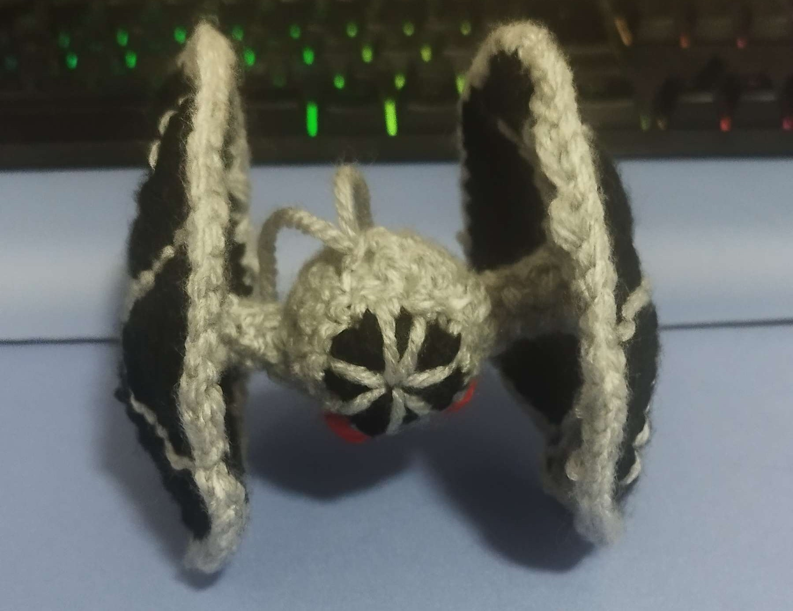
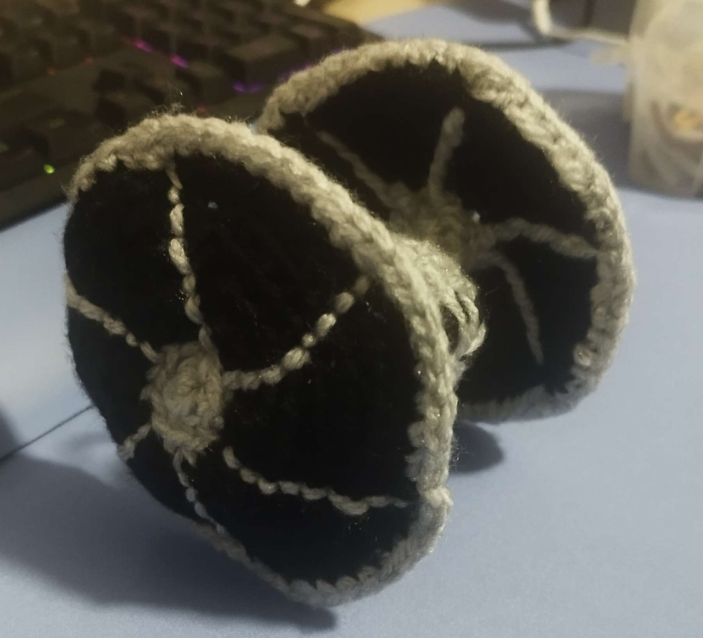

TIE Fighter Amigurumi
The Idea
This project was not in my plans at all. I was not planning on doing any amigurumi projects in the near future, simply because I was more interested in trying other kinds of projects first. However, my dad's birthday was approaching and I really wanted to give him something I made. I had been really busy at the time so it couldn't be something that would take too long. My dad is a big Star Wars fan, so I knew I had to make him something Star Wars related.
Inspiration and Sources
I searched for Star Wars patterns that weren’t too big nor too advanced in difficulty. I ended up choosing a TIE Fighter Amigurumi pattern by ToyGurumi.
I skimmed over the video and the pattern was one that I could definitely tackle with my skill level and it didn’t seem to be all that time consuming (it still took me hours, but I managed to finish it in less than a day).
Materials
The materials I used for the TIE Fighter Amigurumi were the following:
- 4.5 mm hook
- Yarn colors: light gray, black, red
- Yarn needle
- Cotton filling
- Stitch markers
- Scissors
The Process
Here's a general description of the process of crocheting any tapestry you want:
I started by making the cockpit, which consists of a light grey and black sphere, where the black represents the window of the cockpit. This was the first time I crocheted a sphere, and I learned the decrease technique thanks to it. I had already seen it done, but I had never tried it myself.
Halfway through, I realized a small little thing… I didn't have the cotton filling, so I ended up shredding some cotton disks I had at home and used that as filling.
I think the hardest part of making the sphere was counting the rows. This part of the process taught me why stitch markers are so useful XD Counting the rows is easy without them when I’m working on a flat item, but with 3D items, it becomes very tricky.
Then, I worked on the connectors. They were the fastest part of the tutorial, since they are quite small (and at this point I had learned my lesson with counting rows).
The third part of the tutorial was the wings. It was also not that hard to make, since it was a flat surface, which I had more experience with. It was really nice to see the hexagons form.
After finishing all the parts of the ship, I had to embroider all the details. I simplified the details in the ship window A LOT, because 1. I was in a rush and 2. It was my first time embroidering so I had a feeling it would go very wrong. This was my first time trying embroidery and I really enjoyed it. It wasn't a lot but it got me wanting to try more projects that involve embroidery in the future.
The last part of the project involved joining all the parts of the ship together. This was the hardest part of the project for me, because I didn’t use any specific technique. I just kinda winged it, so the stitches turned out quite messy in that area.
You can check the full pattern in the ToyGurumi YouTube channel :)
Result


Challenges
As I mentioned previously, the biggest challenge was joining all the pieces of the ship. I had no experience with sewing in my projects, so that was definitely complicated. I think that was probably the messiest part of the project.
Another challenge I faced was making the embroidered wing lines straight. They ended up kind of curvy, but I think the effect I was going for was still there.
Lessons Learned
I think the main thing I learned through this project is that I need to use proper sewing techniques to make the edges look seamlessly connected. I have already tried specific techniques I found online ever since, and the sewed in parts look much better now.
I also learned that I need to fill in my amigurumis more, since the cockpit was a bit underfilled. It was very hard to balance using enough filling and being able to close the sphere easily.
Finally, this project taught me how to decrease and it was also my first time embroidering.
Conclusion
Overall, I loved how the project turned out, even if it wasn’t perfect, and my dad absolutely loved it! It’s now sitting in our living room as a decoration. I also think it was a good challenge and taught me new techniques and methods I will definitely be applying in the future!